1Mulai dari Masalah
Sekolahmu mau karyawisata. Pesertanya 40 orang (siswa dan guru). Satu kendaraan hanya muat 12 orang. Berapa kendaraan yang harus disewa?
Coba tebak dulu! Jawabanmu yang mana?
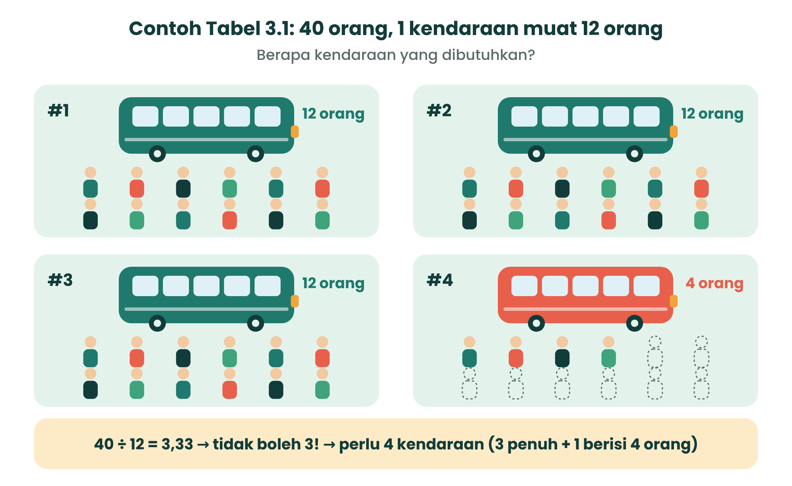
2Apa Sih Literasi Numerasi Itu?
Literasi numerasi adalah kecakapan memakai angka dan simbol matematika untuk memecahkan masalah sehari-hari, termasuk membaca informasi dalam bentuk tabel, grafik, dan bagan. Dengan numerasi kamu bisa menyelesaikan masalah secara praktis, memperkirakan sesuatu, dan mengambil keputusan.
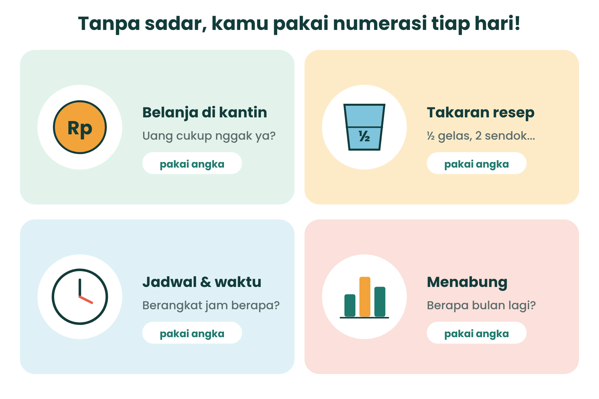
Numerasi ≠ Matematika
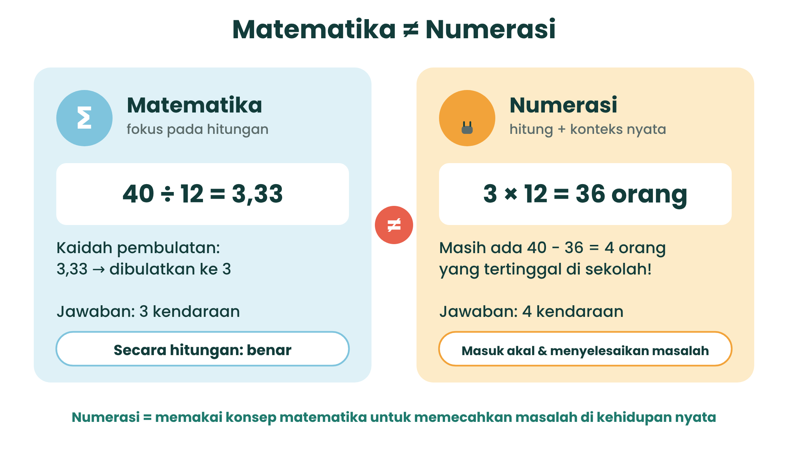
| Matematika | Literasi Numerasi | |
|---|---|---|
| Hasil 40 ÷ 12 | 3,33 → dibulatkan jadi 3 | 3,33 → jadi 4 karena 4 orang tidak boleh tertinggal |
| Pertanyaan kunci | “Berapa hasilnya?” | “Apa artinya hasil ini untuk masalahku?” |
3Enam Komponen Literasi Numerasi
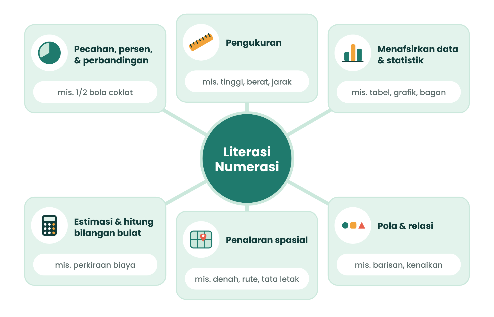
| Komponen | Contoh dalam hidupmu |
|---|---|
| 1. Pecahan, desimal, persen, perbandingan | Diskon 25%, ½ gelas gula |
| 2. Pengukuran | Tinggi badan, berat tas, jarak ke sekolah |
| 3. Menafsirkan informasi statistik | Membaca grafik dan tabel nilai |
| 4. Estimasi & hitung bilangan bulat | Memperkirakan total belanja |
| 5. Penalaran spasial | Membaca denah, memilih rute |
| 6. Pola dan relasi | Menabung Rp5.000 tiap minggu |
KUDA Kuis Dadakan: Cocokkan!
Pilih komponen yang paling tepat untuk setiap situasi.
4Numerasi Ketemu Algoritma
Ingat algoritma? Itu urutan langkah yang jelas untuk menyelesaikan masalah. Merancang penyelesaian masalah numerasi sama seperti menulis algoritma: ada input (diketahui), proses (menghitung), dan output (jawaban yang masuk akal).
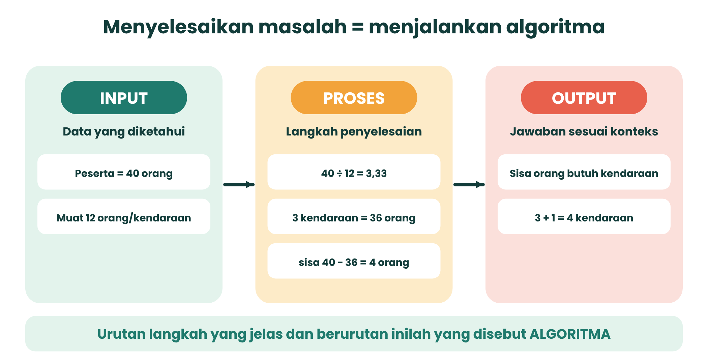
5Lima Langkah Jago Numerasi
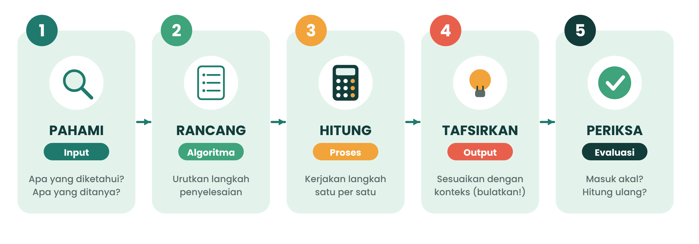
6Trik Pembulatan: Pakai Akal Sehat!
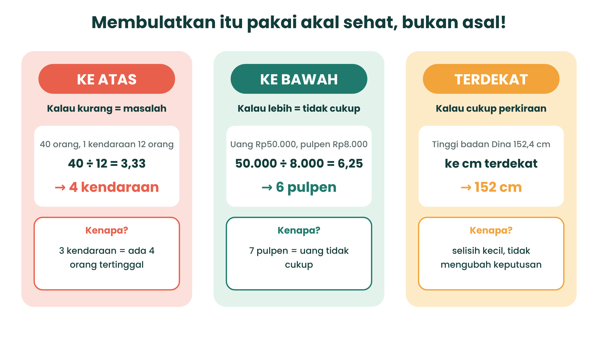
- Ke ATAS kalau kekurangan itu masalah (kendaraan, kursi, iuran).
- Ke BAWAH kalau kelebihan berarti tidak cukup (jumlah barang yang bisa dibeli).
- TERDEKAT kalau cukup perkiraan (tinggi badan, persen survei).
Simulator Pembulatan
Ubah angkanya dan lihat apa yang terjadi kalau kamu salah membulatkan!
7Yuk, Lihat Contohnya!
Contoh 1 · Penjualan Toko A
Penjualan Toko A tahun 2022 ada 200 barang. Setiap tahun naik 4% dari penjualan awal. Pada tahun berapa penjualannya mencapai 270 barang?
- Pahami: awal 200 barang; naik 4% dari awal tiap tahun; target 270; mulai 2022.
- Rancang: cari kenaikan per tahun → cari selisih → bagi → ubah jadi tahun bulat.
- Hitung: kenaikan = 4% × 200 = 8; selisih = 270 − 200 = 70; 70 ÷ 8 = 8,75 tahun; 2022 + 8,75 = 2030,75.
- Tafsirkan: tahun harus bulat dan target baru tercapai di akhir tahun ke-9, jadi dibulatkan ke atas: 2031.
- Periksa: 2030 → 200 + 8×8 = 264 (belum); 2031 → 200 + 8×9 = 272 (sudah ≥ 270 ✓).
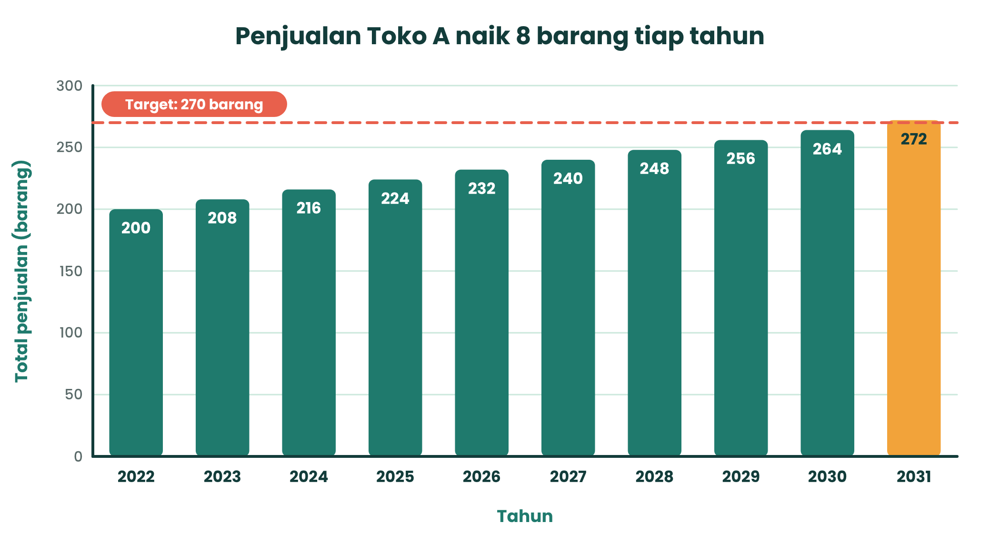
Contoh 2 · Tangki Air Sekolah
Tangki air sekolah berisi 60 liter. Sebanyak ¾ bagian sudah dipakai. Berapa liter yang tersisa?
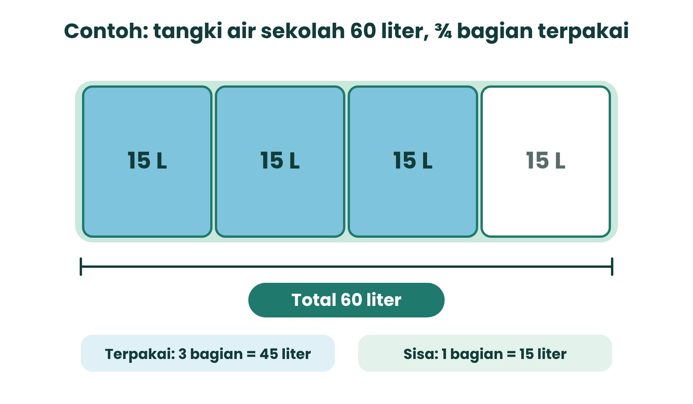
- Pahami: total 60 L, terpakai ¾, ditanya sisa.
- Rancang: hitung yang terpakai (60 × ¾), lalu kurangkan dari total.
- Hitung: 60 × ¾ = 45 L; sisa = 60 − 45 = 15 L.
- Tafsirkan: air yang tersisa 15 liter.
- Periksa: sisa ¼ bagian → ¼ × 60 = 15 L ✓.
Contoh 3 · Membaca Grafik Ekskul
Sebanyak 40 siswa memilih ekstrakurikuler (data ilustrasi).
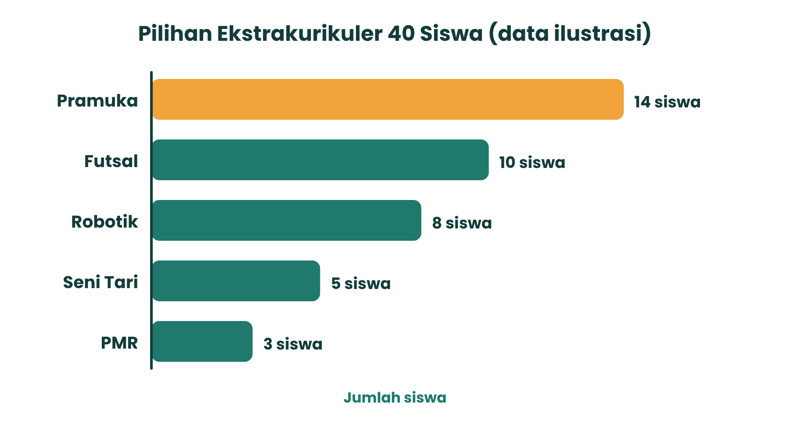
| Pertanyaan | Pengerjaan |
|---|---|
| Berapa persen yang memilih Pramuka? | 14 ÷ 40 × 100% = 35% |
| Pramuka lebih banyak berapa siswa dari Robotik? | 14 − 8 = 6 siswa |
| Berapa persen yang memilih PMR? | 3 ÷ 40 × 100% = 7,5% → terdekat 8% |
8Sneak Peek: Misi Karyawisata ke KKMB Tarakan
Di kelas nanti kamu dan timmu menjadi Panitia Numerasi: merencanakan karyawisata ke Kawasan Konservasi Mangrove dan Bekantan (KKMB) Tarakan untuk 96 siswa dan 6 guru.
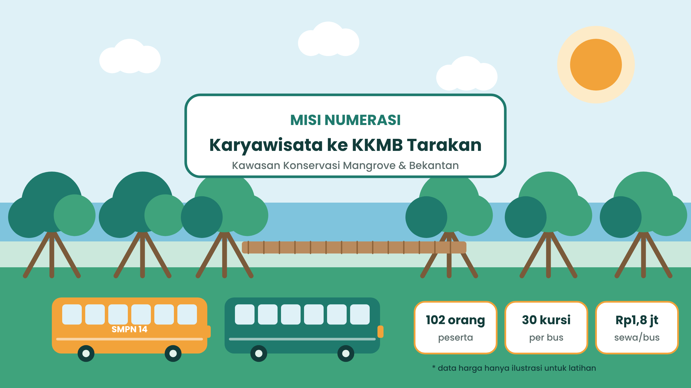
Data misi
- 96 siswa + 6 guru = 102 orang
- Bus 30 kursi, sewa Rp1.800.000/bus
- Tiket Rp5.000/orang
- Konsumsi Rp15.000 + Rp3.000/orang
- Iuran dibagi 96 siswa, dibulatkan ke atas kelipatan Rp5.000
Kamu akan menghitung
- Jumlah bus & kursi kosong (bilangan bulat, spasial)
- Total biaya & iuran (estimasi, pembulatan)
- Persen pilihan menu (persen, statistik)
- Pilihan bus paling hemat (perbandingan)
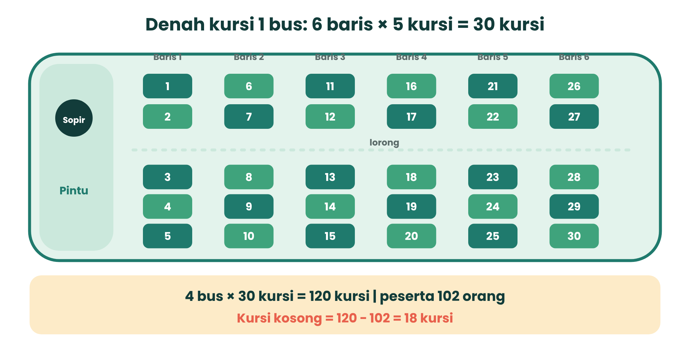
9Cek Pemahamanmu
Pilih jawaban lalu lihat penjelasannya. Coba kerjakan dulu di kertas dengan 5 langkah jago numerasi!
10Rangkuman Singkat
- Numerasi ≠ matematika. Numerasi memakai hitungan untuk menjawab masalah nyata dan menafsirkan hasilnya.
- Ada 6 komponen numerasi: pecahan/persen/perbandingan, pengukuran, statistik, estimasi bilangan bulat, penalaran spasial, pola dan relasi.
- Rancang penyelesaian seperti algoritma: Input → Proses → Output.
- 5 Langkah Jago Numerasi: Pahami – Rancang – Hitung – Tafsirkan – Periksa.
- Pembulatan sesuai konteks: atas (kurang = masalah), bawah (lebih = tidak cukup), terdekat (cukup perkiraan).
Kamus Mini
| Istilah | Artinya |
|---|---|
| Literasi numerasi | Kecakapan memakai angka dan simbol matematika untuk memecahkan masalah sehari-hari |
| Algoritma | Urutan langkah yang jelas untuk menyelesaikan masalah |
| Input / Proses / Output | Data yang diketahui / langkah menghitung / hasil yang sudah ditafsirkan |
| Frekuensi | Banyaknya data yang muncul (mis. jumlah siswa pada tiap pilihan) |
| Pembulatan | Menyederhanakan angka ke bilangan bulat tertentu (atas, bawah, terdekat) |
Tugas mandiri
Temukan satu masalah numerasi di rumah (belanja, resep, tabungan) dan tulis Input–Proses–Output-nya di buku tugas. Pertemuan berikutnya (TP 10): menuliskan instruksi dalam format pseudocode.